KillerBench হলো Steve the Killer-এর তৈরি একটি Windows ডায়াগনসিস, মেরামত ও রক্ষণাবেক্ষণের ওয়ার্কবেঞ্চ, যা Killer Tools পরিবারের অংশ। সংস্করণ 1.0.0 এখনো প্রকাশিত হয়নি। এর ডেস্কটপ অ্যাপ, Engine ও CLI ডায়াগনস্টিক প্রমাণ এবং সমর্থিত মেরামতের ওয়ার্কফ্লো ভাগাভাগি করে।
প্রাপ্যতা ও পরিসর
এখনো কোনো সর্বজনীন KillerBench ডাউনলোড বা Engine প্যাকেজ নেই। ডাউনলোড ও সেটআপ বর্তমান Windows x64 লক্ষ্য এবং Desktop Runtime-এর প্রয়োজনীয়তা বর্ণনা করে। নেটিভ মেরামতের যাচাই এখনো চলছে; একটি টুলের উপস্থিতি প্রমাণ করে না যে প্রতিটি ত্রুটি, বাধা বা Windows কনফিগারেশন পরীক্ষা করা হয়েছে।
সোর্স ও বিতরণ বিজ্ঞপ্তি
KillerBench GPLv3 লাইসেন্সের অধীনে। এর বিতরণ লাইসেন্স হলো GNU General Public License সংস্করণ 3। লাইসেন্সটি আওতাভুক্ত কাজ অনুলিপি, পরিবর্তন ও বিতরণের অনুমতি ও শর্ত বর্ণনা করে।
সর্বজনীন KillerBench রিপোজিটরি বর্তমানে প্রকল্পের তথ্য দেয়। সম্পূর্ণ বাস্তবায়ন সেখানে সর্বজনীনভাবে উপলব্ধ নয়। এই ডেভেলপার নির্দেশিকাগুলো একটি অনুমোদিত সোর্স চেকআউট বর্ণনা করে; এগুলো কোনো সর্বজনীন সোর্স ডাউনলোড দেয় না।
একটি বাইনারি বিতরণের আগে এর প্রকাশককে GPLv3 ধারা 6 অনুমোদিত কোনো পদ্ধতিতে সংশ্লিষ্ট সোর্স সরবরাহ করতে হবে, লাইসেন্সে প্রয়োজনীয় সোর্স ও বিল্ড উপকরণসহ। প্রথম সর্বজনীন প্যাকেজের সোর্স সরবরাহের নির্দেশনা ও অন্তর্ভুক্ত তৃতীয় পক্ষের বিজ্ঞপ্তি এখনো বাকি। GPLv3 তৃতীয় পক্ষের ফন্ট পুনর্বিতরণের অনুমতি দেয় না; বর্তমান ফন্টের অনুমতি এখনো যাচাই করা দরকার। পুনর্বিতরণের আগে প্রকাশিত প্যাকেজের লাইসেন্স, সোর্সের নির্দেশনা ও বিজ্ঞপ্তি পর্যালোচনা করুন।
গোপনীয়তা ও বাইরের পরিষেবা
ডায়াগনস্টিক ও লগ বিশ্লেষণ কোনো AI পরিষেবা বা KillerBench অ্যাকাউন্ট ছাড়াই স্থানীয়ভাবে চলে। জার্নাল ও সংরক্ষিত প্রমাণ স্থানীয় অ্যাকাউন্টের %LOCALAPPDATA%\KillerBench ফোল্ডার ব্যবহার করে। নির্বাচিত কাজগুলো উইন্ডোজ আপডেট, সফটওয়্যার ডাউনলোড পরিষেবা, ডিরেক্টরি বা অন্যান্য নির্দিষ্ট গন্তব্যের সঙ্গে যোগাযোগ করতে পারে। চালু হওয়ার সময়ের আপডেট পরীক্ষা GitHub-এর সঙ্গে যোগাযোগ করে, এবং নলেজ আপডেট ও MCP ইনস্টলার পৃষ্ঠা তাদের কনফিগার করা পরিষেবার সঙ্গে যোগাযোগ করে। MCP ব্যবহারকারী একটি AI ক্লায়েন্ট ফেরত দেওয়া রেফারেন্স ফলাফল পেতে পারে।
এই ওয়েবসাইট থিম ও অ্যাকসেন্ট রঙের পছন্দ ব্রাউজারের স্থানীয় স্টোরেজে সংরক্ষণ করে। এর নির্দেশিকাগুলো আপনার কম্পিউটারে কোনো ডায়াগনসিস চালায় না। কাঁচা লগ, আমদানি করা ফাইল ও রপ্তানি করা প্রমাণে কম্পিউটারের নাম, অ্যাকাউন্ট, পাথ বা সংবেদনশীল উৎস লেখা থাকতে পারে। শেয়ার করার আগে সেগুলো পর্যালোচনা করুন; সর্বজনীন রিপোর্টে পুনরুদ্ধার কী, ক্রেডেনশিয়াল বা গ্রাহকের ডেটা অন্তর্ভুক্ত করবেন না।
সহায়তা
প্রকল্পের তথ্য সর্বজনীন রিপোজিটরিতে পাওয়া যায়। সহায়তার জন্য লেখকের ওয়েবসাইটে প্রকাশিত যোগাযোগের তথ্য ব্যবহার করুন; অ্যাপের সংস্করণ, Windows বিল্ড, নির্দিষ্ট টুল, প্রত্যাশিত ফলাফল ও পর্যবেক্ষিত ফলাফল উল্লেখ করুন। পাঠানোর আগে প্রমাণ পর্যালোচনা করে সংবেদনশীল অংশ সরিয়ে দিন, এবং গ্রাহকের তথ্যের জন্য একটি অনুমোদিত ব্যক্তিগত চ্যানেল ব্যবহার করুন। অনিশ্চিত মেরামতের ফলাফলের জন্য জার্নাল রেখে দিন।
এটিও দেখুন...
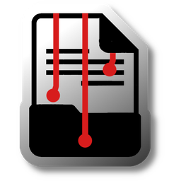
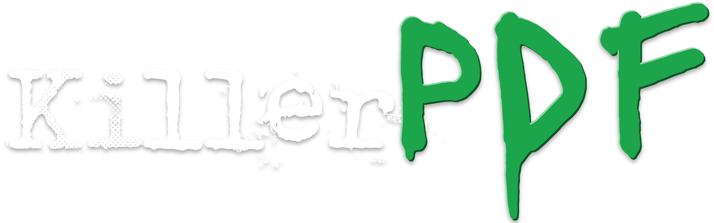
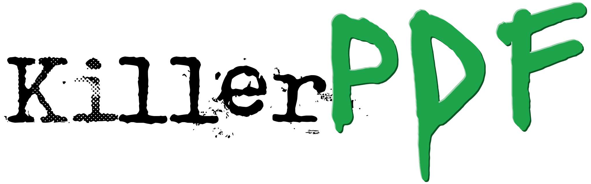
Windows-এর জন্য ওপেন-সোর্স PDF এডিটর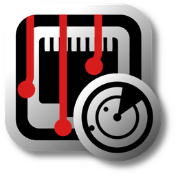
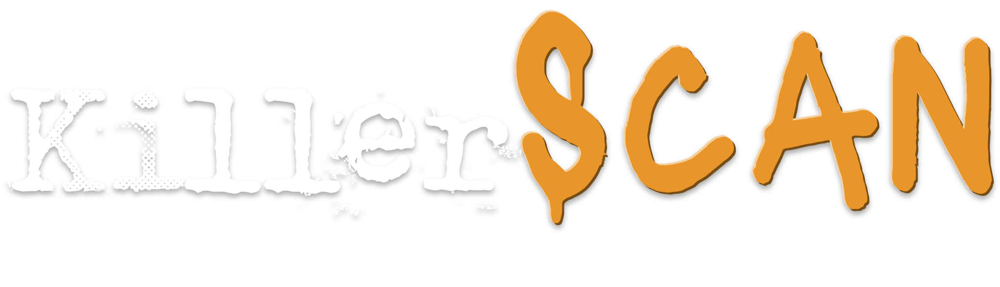
Windows-এর জন্য ওপেন-সোর্স নেটওয়ার্ক স্ক্যানার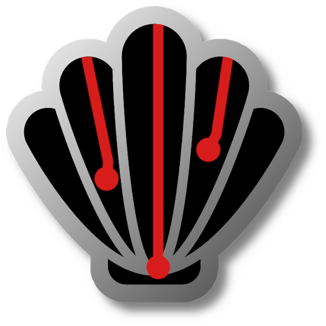
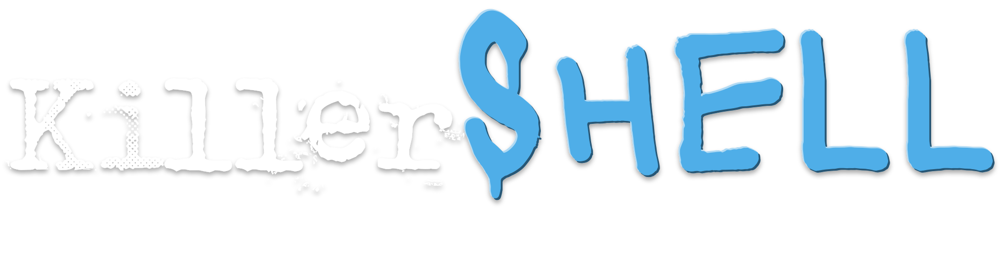
Windows পাওয়ার ইউজারদের জন্য ওপেন-সোর্স শেল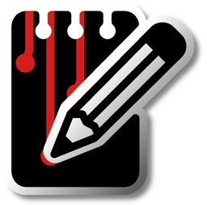
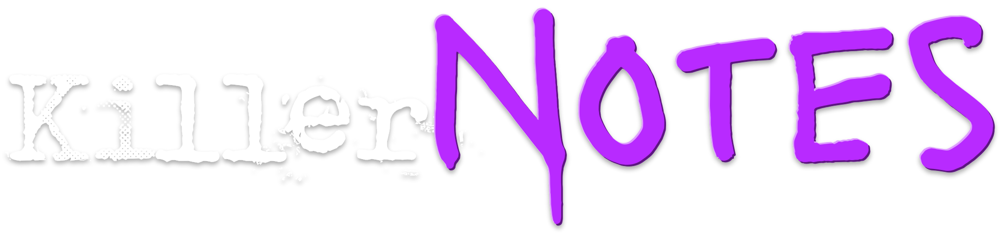
Windows-এর জন্য ওপেন-সোর্স এনক্রিপ্টেড নোটপ্যাড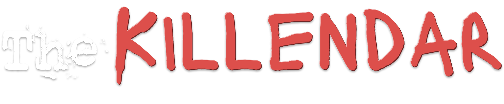
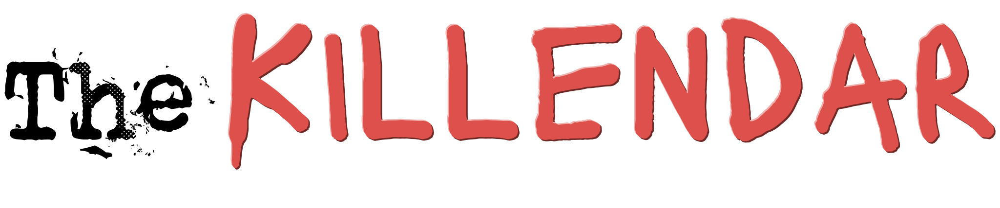
Windows-এর জন্য ওপেন-সোর্স এনক্রিপ্টেড ক্যালেন্ডার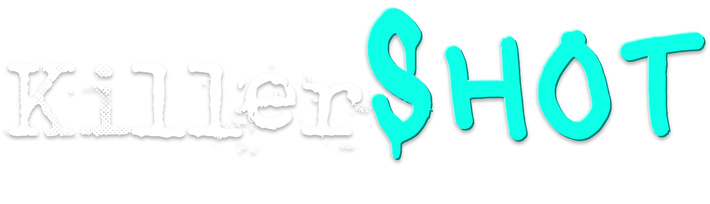
Windows-এর জন্য ওপেন-সোর্স এনক্রিপ্টেড স্ক্রিনশট অ্যালবাম